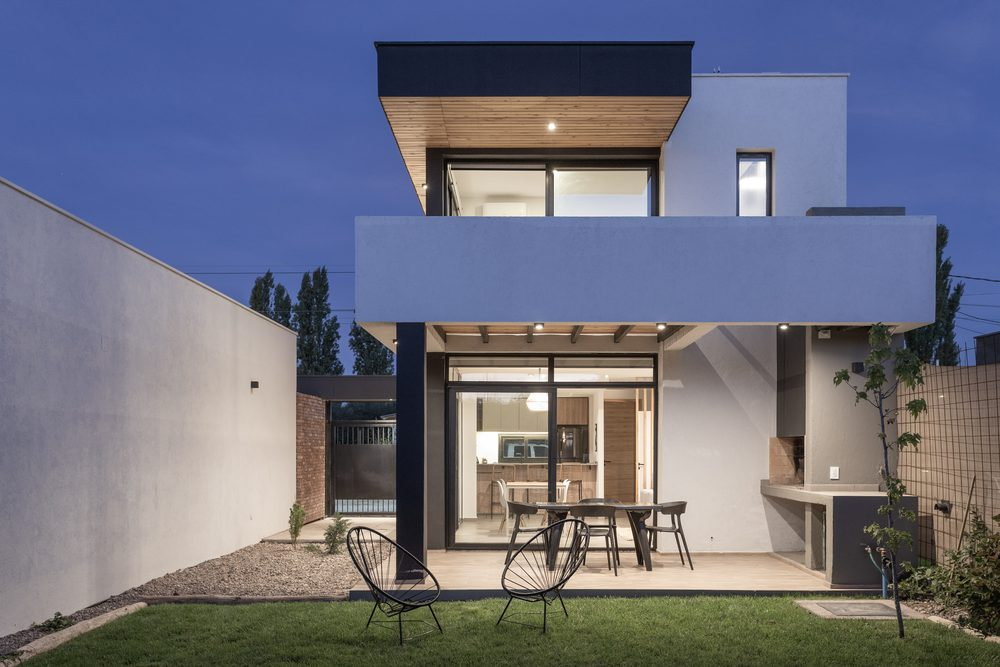
2023
Villa Las Moras
Ver obra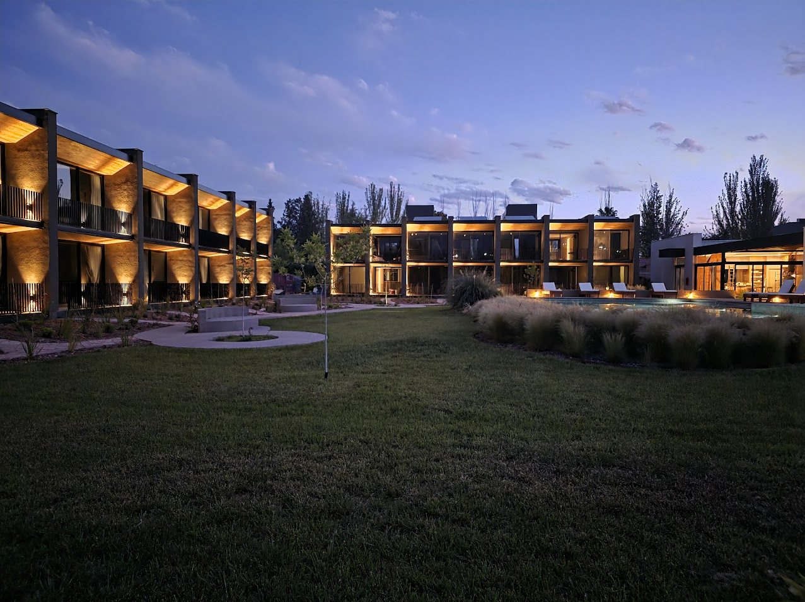
Diseñamos y construimos viviendas para quienes las habitan. Cada casa responde a un terreno, a una orientación y a una forma de vivir que no se repiten.

Villa Las Moras
Ver obra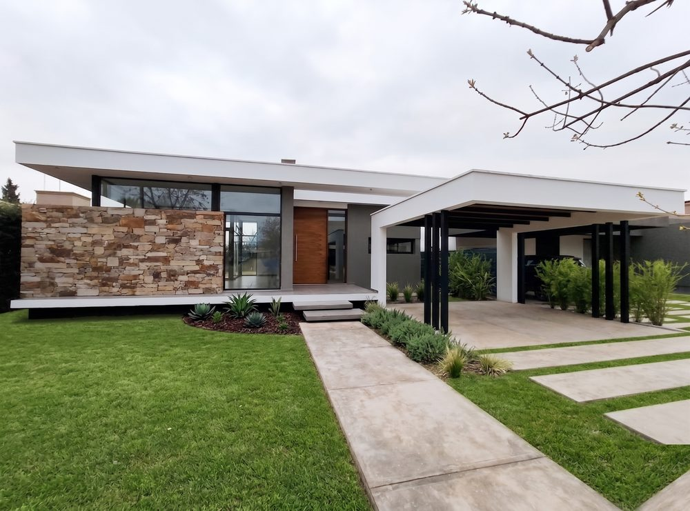
Casa Los Peralitos
Ver obra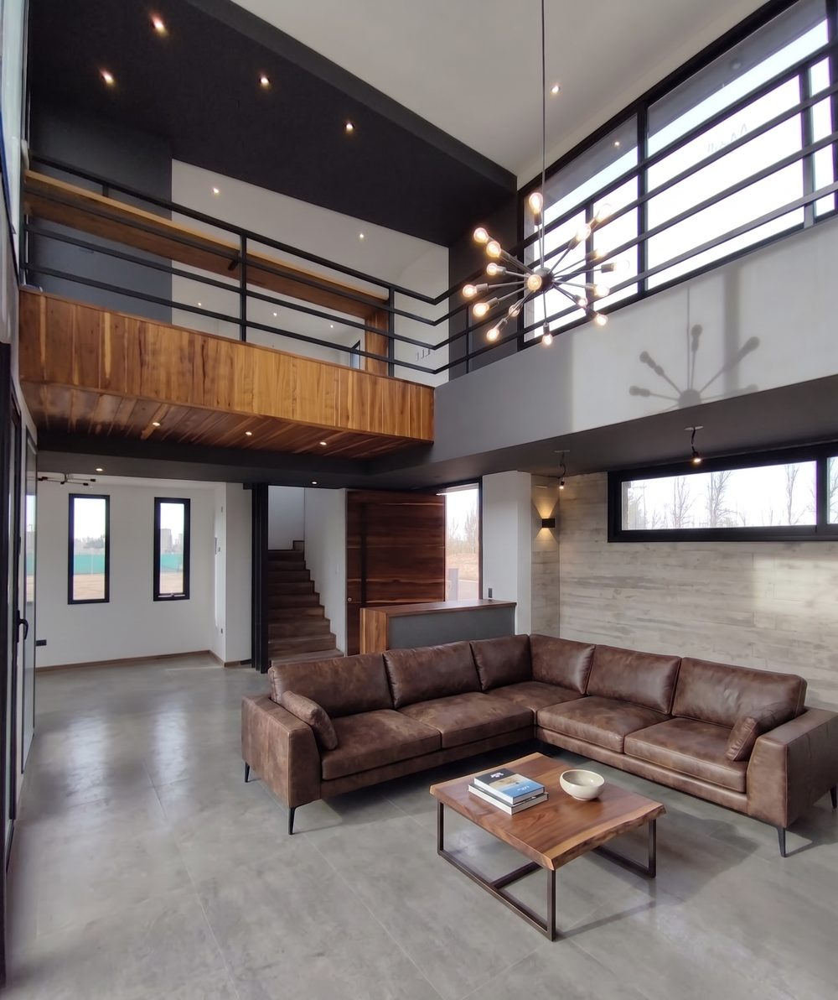
Casa Alma Gardenia
Ver obra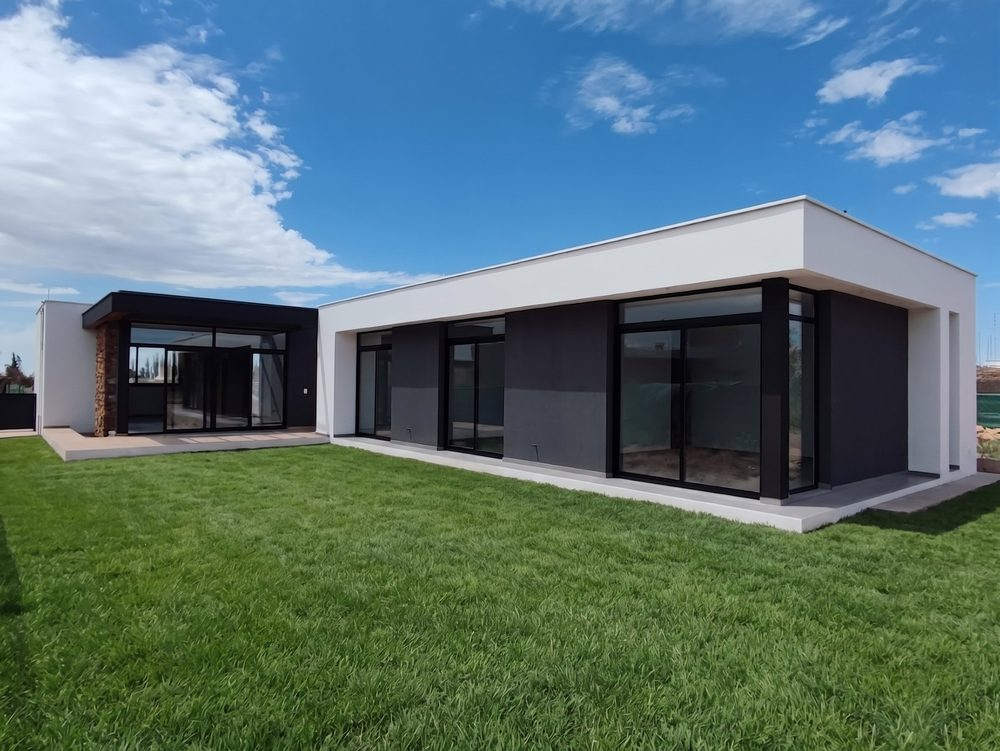
Lar de Vieytes
Ver obra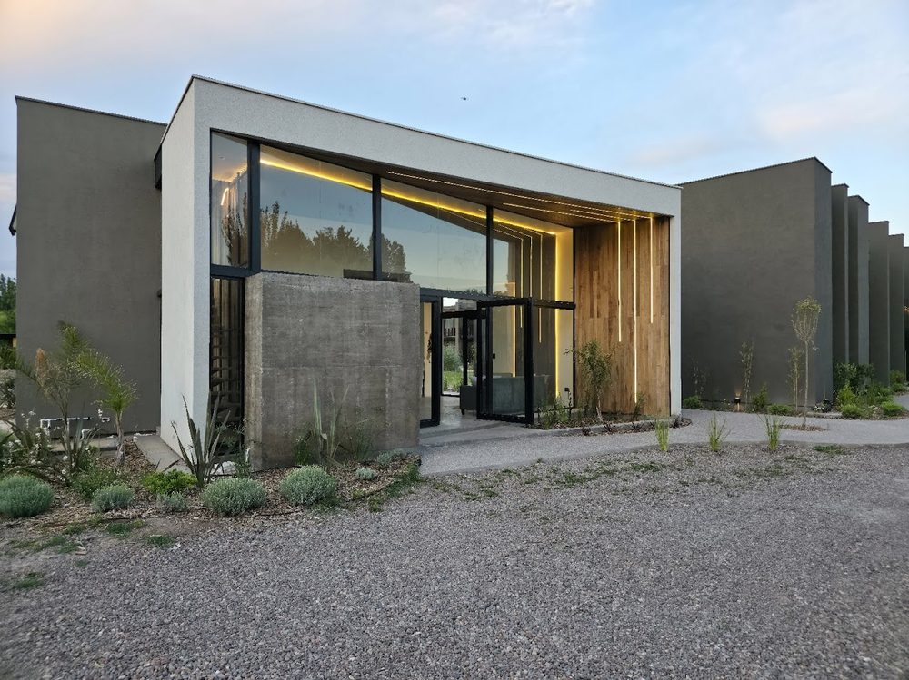
Hotel Vistalba
Ver obra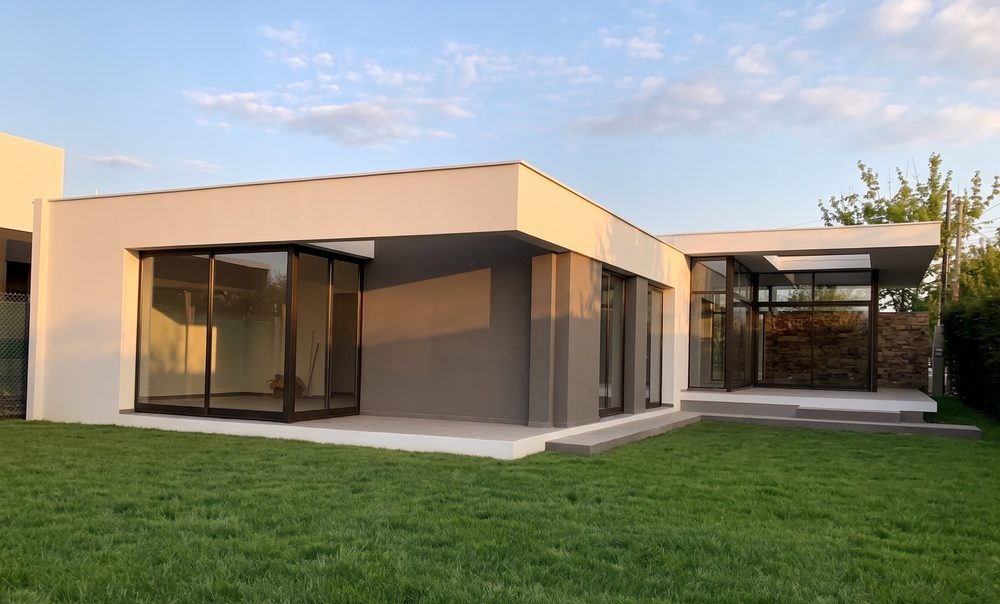
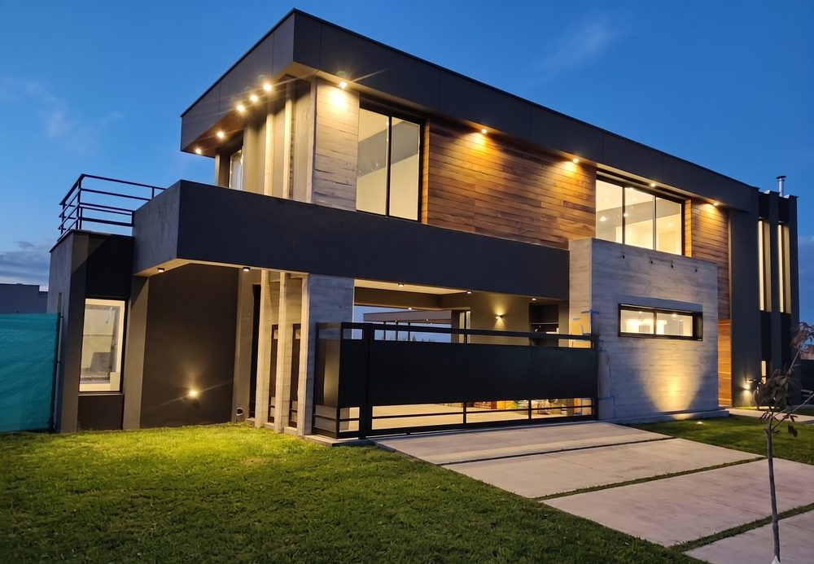
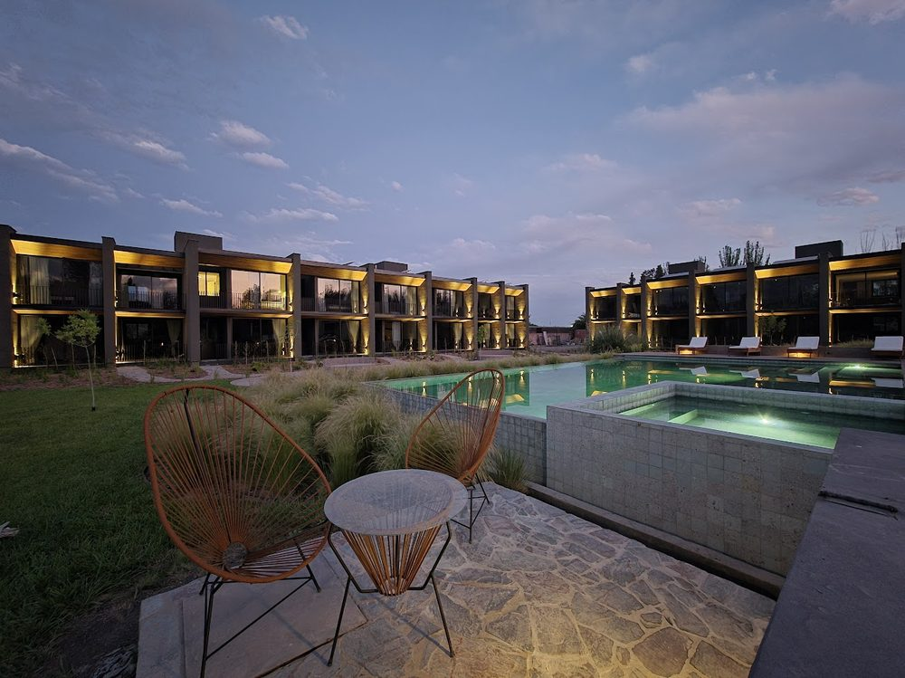
TRAZZO nace de la práctica: proyecto, dirección y obra. Una trayectoria en vivienda unifamiliar y multifamiliar que en 2025 culminó con la construcción integral de un hotel en Mendoza.
Ese oficio es el que sostiene hoy cada casa que diseñamos.
Registro de avance. Vivienda unifamiliar en construcción en Mendoza, 2026.
El frente se resuelve con un plano horizontal continuo, tabique de listones de madera y muro texturado. La luz rasante marca el ingreso.
Un único espacio corrido se abre a la galería mediante grandes paños corredizos. Adentro y afuera terminan siendo la misma habitación.
La galería extiende la casa hacia el fondo del terreno: mesa larga, parrilla y piscina bajo la losa de hormigón.
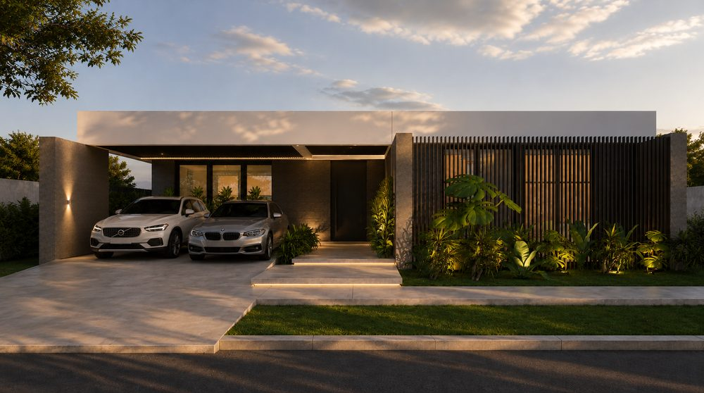
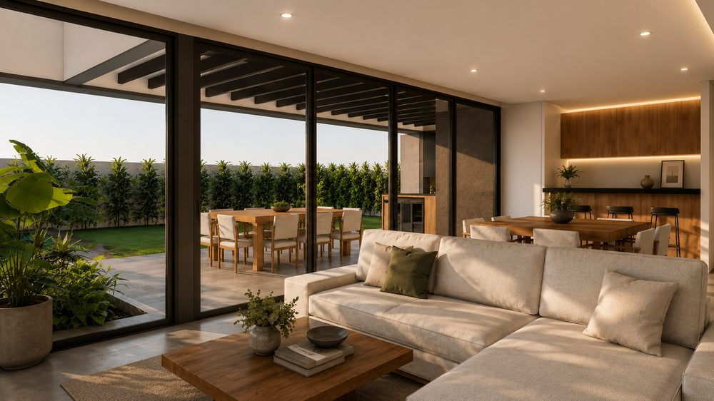
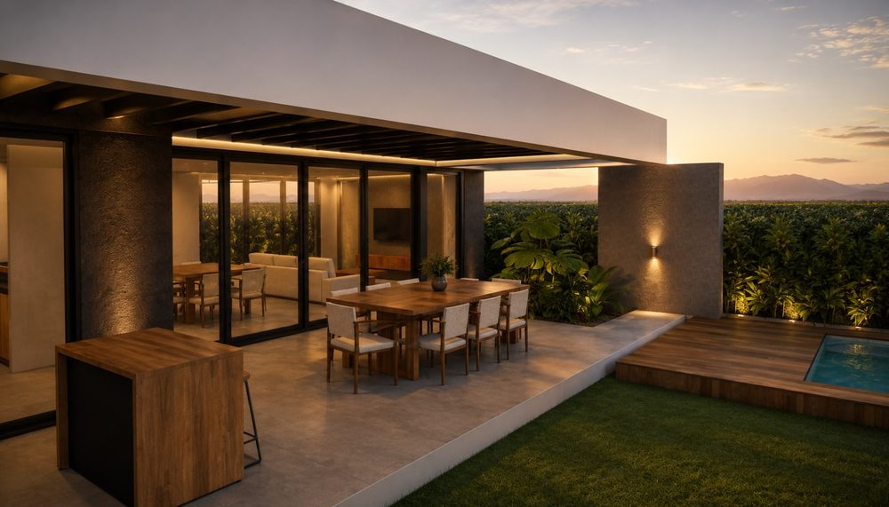
Contanos de qué se trata. Respondemos en menos de 24 horas con una primera lectura del proyecto.